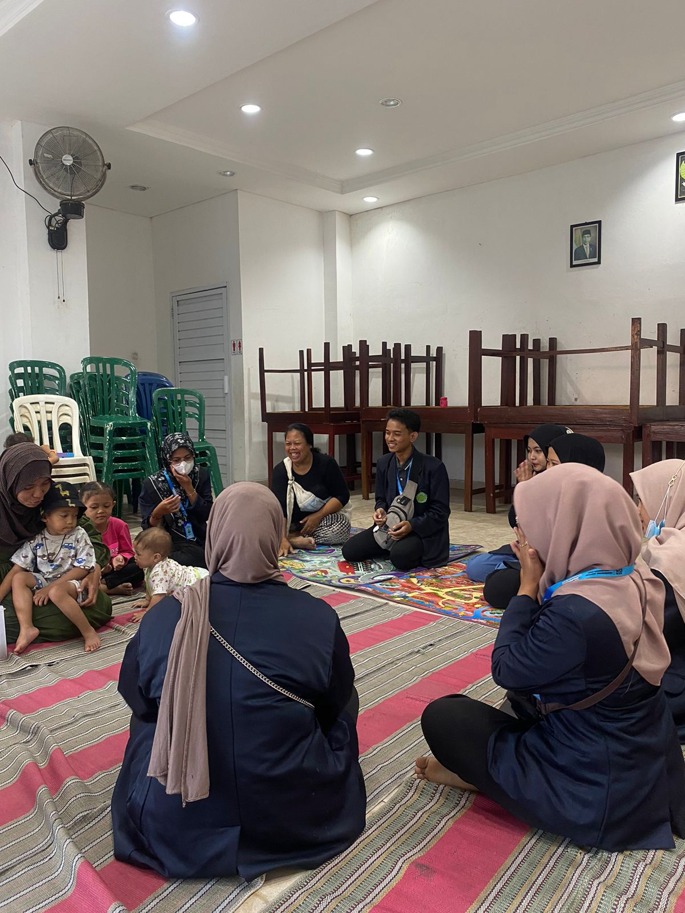
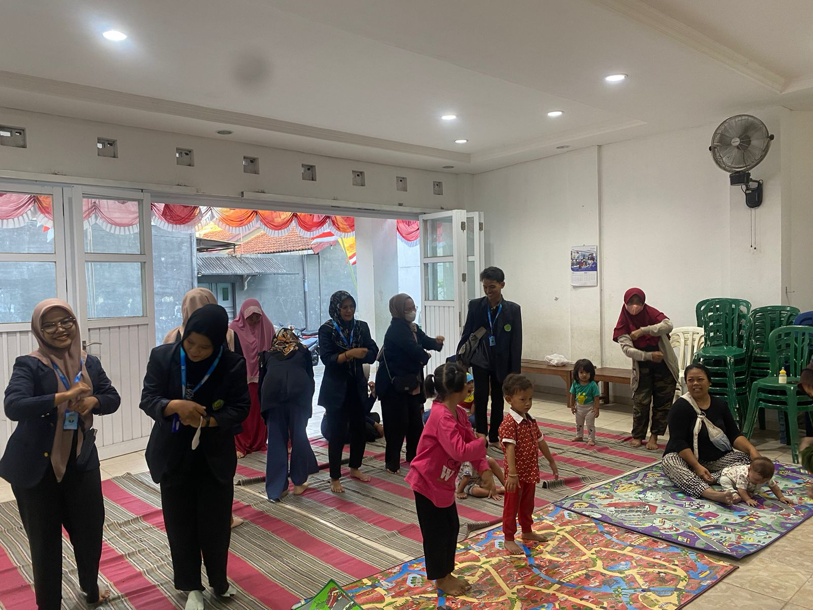
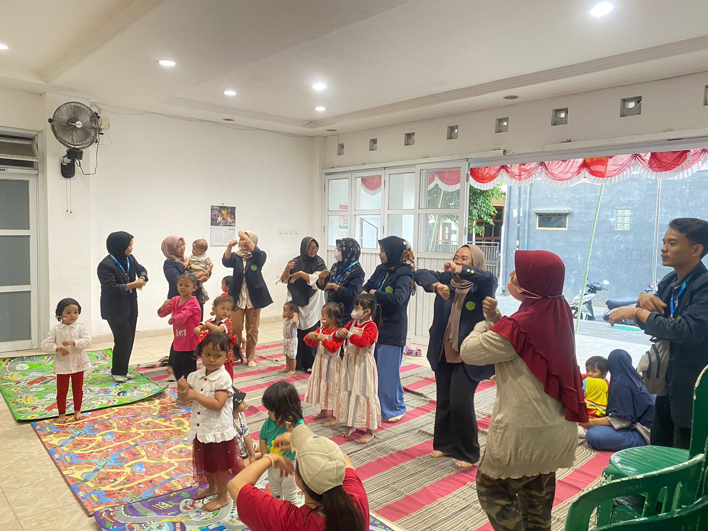
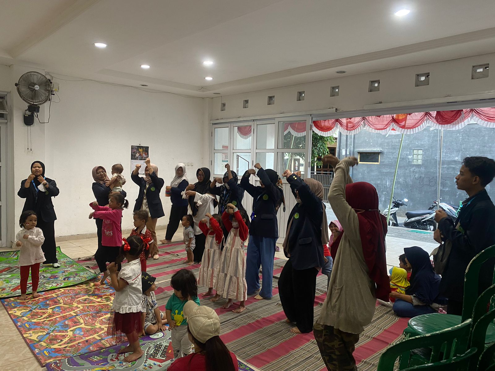
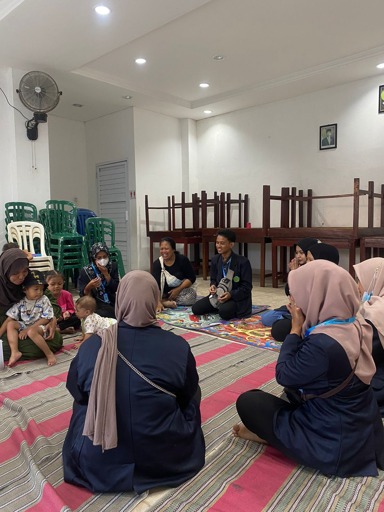
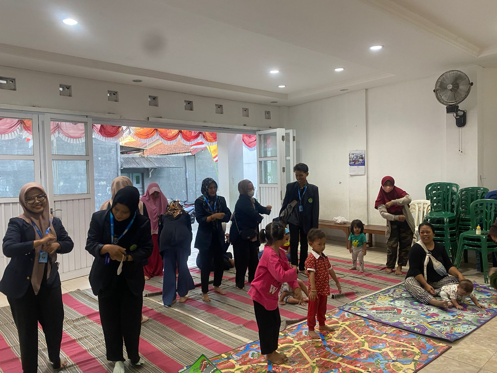
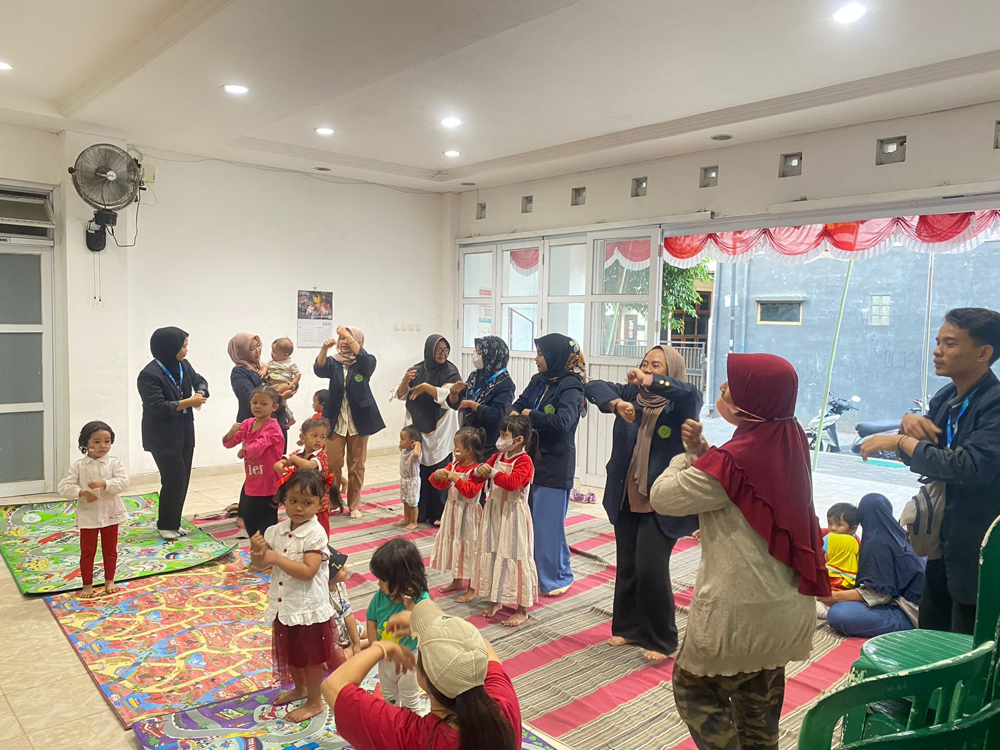
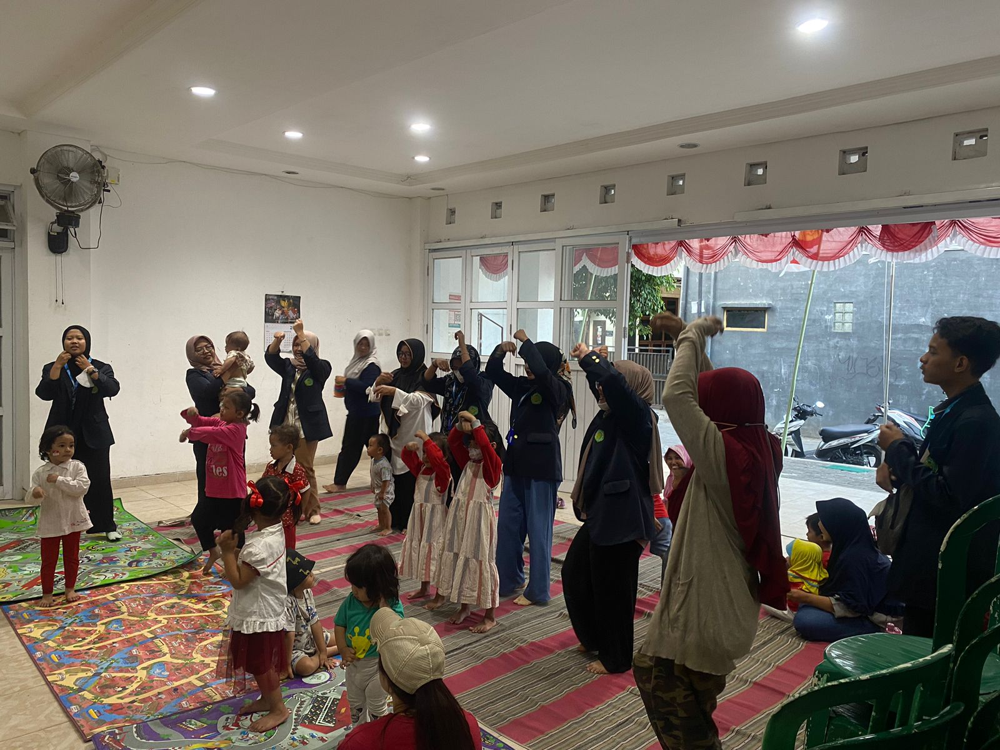

Mengikuti dan Membantu kegiatan Paud di RW.04
PANDEYAN, KEC. UMBULHARJO, KOTA YOGYAKARTA, DIY
PAUD adalah singkatan dari Pendidikan Anak Usia Dini, sebuah Lembaga yang diwujudkan untuk mengoptimalkan perkembangan anak mulai dari usia 0-5 tahun agar siap untuk masuk ke jenjang taman kanak – kanak (TK), kemudianke jenjang Sekolah Dasar (SD). Pada kegiatan PAUD ini berfokus untuk membentuk anak menjadi anak lebih banyak belajar pada agama dan moral, fisik motorik, kognitif, maupun Bahasa, melatih anak dengan konsentrasi yang baik, membantu perkembangan otak anak, dan meningkatkan kemampuan konsentrasi anak. Kegiatan PAUD ini diadakan dengan gerak dan lagu, Menyusun balok, mengenalkan anggota tubuh, belajar menghitung.
DOKUMENTASI
 






